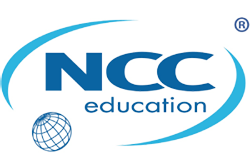

Educational Partners

MIDDLESEX UNIVERSITY
Middlesex is a British university based in London, with a distinguished heritage of excellence and innovation in higher education. There are over 40,000 students on Middlesex courses at campuses in London, Dubai, Malta and Mauritius, and with prestigious academic partners across the world.
The Middlesex vision is to be internationally outstanding in teaching and research. The University has a reputation for the highest quality British teaching, research that makes a real difference to people’s lives and a practical, innovative approach to providing business solutions.
An Aptech qualification can lead to a Middlesex University computing degree. You will join Middlesex students on the first, second or third year of their course, along with other new students who are also topping up their qualification. Study for one, two or three years to gain a BSc qualification, and one further year for a Masters degree.

LINCOLN UNIVERSITY, MALAYSIA
Established in 2002, Lincoln University College, Malaysia is one of the renowned private institutions of higher education. It has been approved by the Ministry of Higher Education and Malaysian Qualifications Agency (MQA- National Accreditation Board). It is an ISO 9001:2015 certified academic institution. Lincoln University College, Malaysia is the associate member of the International Association of Universities (IAU), Paris, Association of Commonwealth Universities (ACU), Association of Indian Universities (AIU) and is also registered education provider under The People’s Republic of China.
Aptech has an alliance with Lincoln University College, Malaysia to offer an international degree to students. After completing Advanced Diploma in Software Engineering they can obtain a Bachelor’s in Information Technology – Hons from Lincoln University College, Malaysia.
The best part about the alliance is that it offers an international degree to the students while they stay in their home country which saves money. The course duration is of one year which is also a time-saving factor helping students to graduate to successful professionals faster.

NCC EDUCATION, UK
NCC Education, a top UK awarding body is a global provider of British education in Information Technology (I.T). Established in 1966 as a division of UK’s National Computing Centre, NCC started offering I.T. qualifications in 1976. It is regulated by the Office for Qualifications and Examinations Regulations (OfQual). The NCC education qualification enables students to secure an admission in over 60 universities worldwide.
Aptech has an alliance with NCC Education to offer qualification in Computing. After the course completion, students can avail NCC Diploma in Computing (L5) along with Aptech qualification. Through its collaboration with NCC, Aptech offers students a unique opportunity to take their I.T. careers to greater heights. On completion of NCC Diploma in Computing (L5), students can opt for BSc. (Hons) in Business Computing & Information Systems from the University of Central Lancashire (UCLAN), UK.
BENEFITS OF APTECH-NCC QUALIFICATION
- Offers Cost effective education
- Makes you job-ready in the I.T. sector
- Provides a British degree in Nigeria
Certification: NCC Diploma in Computing and BSc. (Hons) in Business Computing & Information Systems are highly valued certifications. These qualifications impress the employer and help the students to stay ahead of the competition.